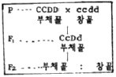
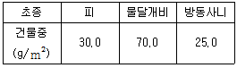

종자기사 (2007-05-13 기출문제)
1과목: 종자생산학
1. 다음 중 자가수정에 의하되 교잡에 대한 우려가 가장 적은 것은?
- 상추, 완두
- 참외, 멜론
- 수박, 오이
- 배추, 시금치
(정답률: 알수없음)

2. 꽃가루 형성과정의 설명 중 옳은 것은?
- 화분모세포의 염색체 수는 1n이다.
- 1개의 화분모세포는 2회의 감수분열 결과 4개의 소포자가 형성되며 모두 다 생식기능을 갖는다.
- 1개의 소포자는 다시 1회의 핵분열을 거쳐 성숙한 화분립을 만든다.
- 수분 후에 화분립이 발아하여 화분관을 형성하고 생식세초는 1개의 웅핵 배우자를 만든다.
(정답률: 알수없음)
3. 잡종강세의 원인을 핵 내 유전자의 작용에 있다고 보는 내용과 관련이 없는 것은?
- 비대립 유전자 간의 상호작용
- 대립유전자 간의 상호작용
- 세포질과 핵 내 유전자의 상호작용
- 부분형질 간의 상호작용
(정답률: 60%)
4. 완전화의 화기에서 암술자(雌棻)을 구성하는 부분이 아닌 것은?
- 주두(암술머리)
- 자방(씨방)
- 화주(암술대)
- 화분관
(정답률: 알수없음)
5. 다음중 60℃에서 2일간의 처리로 휴면중인 종자의 발아가 촉진되는 것은?
- 호박
- 완두
- 상추
- 시금치
(정답률: 10%)
6. 종자검사용 시료 추출시 포장물의 크기가 100~500kg 범위일 경우 채취해야 할 1차 시료의 기준은?
- 최소 5개 이상
- 최소 10개 이상
- 최소 20개 이상
- 최소 30개 이상
(정답률: 알수없음)
7. 다음 중 고구마 꽃의 수술은 몇 개 인가?
- 3개
- 5개
- 6개
- 10개
(정답률: 알수없음)
8. 밀 종자의 테트라졸리움(tetrazolium) 검사에서 발아능이 가장 좋은 종자의 상태는?
- 배가 착색되지 않은 종자
- 배가 청색으로 착색된 종자
- 배가 붉은색으로 착색된 종자
- 배가 엷은 분홍색으로 착색된 종자
(정답률: 알수없음)
9. 맥류 종자의 휴면타파에 가장 효과과 큰 것은?
- 비타룩스 A
- 비타지람
- H2O2
- KClO3
(정답률: 알수없음)
10. 유전자 웅성불임성(GMS)을 이용하여 효과적으로 1대 잡종 종자를 생산하고 있는 작물은?
- 무
- 고추
- 양파
- 당근
(정답률: 알수없음)
11. 씨 없는 수박(3배체)에 대한 설명으로 옳지 않은 것은?
- 종자가 크고 종피가 두껍다.
- 종자의 발아율이 낮아서 발아촉진처리를 필요로 한다.
- 정상적인 2배체에 콜히친처리를 하여 3배체 수박 종자를 바로 얻게 된다.
- 3배체 수박을 착과시키기 위해서는 정상 수박(2n)의 화분으로 수분시켜 줄 필요가 있다.
(정답률: 알수없음)
12. 다음 중 인공교배법을 이용하지 않은 것은?
- 자가불화합성 식물의 원종 증식
- 웅성불임성 식물의 원종 증식
- 과채류의 1대 잡종 종자 생산
- 생산력 검정용 1대 잡종 조합 채종
(정답률: 알수없음)
13. 다음중 식물의 화아유도에 영향을 주는 화학물질은?
- GA3
- Coumar in
- H2O2
- NaCl
(정답률: 알수없음)
14. Guaiacol 방법에 의해 종자 발아력을 간이로 검정할 수 있다. 절단한 종자에 Guaiacol 수용액을 첨가하면 발아력이 있는 종자의 배 및 배유의 단면 색깔은?
- 적색
- 갈색 내지 청색
- 황색
- 반응 없음
(정답률: 알수없음)
15. 종자의 저장력이 높은 작물로만 짝지어진 것은?
- 수수, 사탕무
- 귀리, 콩
- 땅콩, 벼
- 양파, 수수
(정답률: 알수없음)
16. 다음 중 발아검사에 사용하는 종자로 가장 적합한 것은?
- 순도분석을 마친 정립종자(순수종자)
- 수집단별로 채취한 1차시료
- 휴면 중인 종자를 포함한 혼합시료
- 살균제 처리를 한 수확 직후의 종자
(정답률: 알수없음)
17. 벼과(禾本科) 종자의 초엽이 가진 기능을 바르게 나타낸 것은?
- 양분의 저장
- 발아 시 배(胚)에 양분 전달
- 발아 시 어린 잎의 보호
- 발아 시 종자근 보호
(정답률: 알수없음)
18. 종자를 너무 늦게 수확할 경우에 나타날 수 있는 가장 큰 현상은?
- 탈곡 과정에서 종자가 상처를 받기 쉽다.
- 정선 과정에서 등숙정지립이 많이 발생한다.
- 건조 과정에서 위축되는 종자가 많다.
- 저장 중에 퇴화가 빨라 저장성이 떨어진다.
(정답률: 알수없음)
19. 농약과 색소를 혼합하여 접착제(Polymer)로 종자 표면에 코팅처리를 하는 경우가 있는데, 이러한 코팅처리를 무엇이라 하는가?
- 필름코팅(Film coating)
- 종자펠릿(Seed pellet)
- 피막종자(Encrusted seed)
- 장환종자(Seed granules)
(정답률: 82%)
20. 다음 중 품종 확인을 위한 종자 검사 방법은?
- 페놀반응 검사
- 테트라졸리움 검사
- 순도검사
- 발아검사
(정답률: 알수없음)
2과목: 식물육종학
21. F1이 잡종강세를 일으킬 수 있는 힘을 가리키는 것은?
- 선발효과
- 교잡능력
- 근연계수
- 조합능력
(정답률: 알수없음)
22. Vavilov의 유전자중심지설 이란 무엇을 기준으로 원산지를 추정하는 방법인가?
- 식물의 염색체
- 교잡의 친화성
- 식물의 변이성
- 식물의 면역성
(정답률: 알수없음)
23. 원연식물간의 유전질조합 방법으로 가장 알맞은 것은?
- 복교잡
- 원형질체 융합
- 3계교잡
- 배배양
(정답률: 알수없음)
24. 분리육종방법 중 계통집단선발 방법에 해당되지 않는 것은?
- 후대검정에 의한 계통집단선발
- 영양계선발
- 검정교배에 의한 계통집단선발
- full-sib 가계선발
(정답률: 알수없음)
25. 변이를 일으키는 원인에 따라서 3가지로 구분할 때 옳은 것은?
- 방황변이, 개체변이, 일반변이
- 장소변이, 돌연변이, 교배변이
- 돌연변이, 유전변이, 비유전변이
- 대립변이, 양적변이, 정부변이
(정답률: 알수없음)
26. 후대 검정의 설명으로 가장 관련이 없는 것은?
- 선발된 우량형이 유전적인 변이인가를 알아본다.
- 표현형에 의하여 감별된 우량형을 검정한다.
- 선발된 개체가 방황 변이인가를 알아본다.
- 질적 형질의 유전적 변이 감별에 주로 이용된다.
(정답률: 알수없음)
27. 다음 중 웅예선숙(雄蕊先熟)에 해당하는 식물은?
- 배추
- 무
- 질경이
- 양파
(정답률: 67%)
28. 감수분열 때 2가 염색체가 적도면에 배열되고, 양극에서 방추사가 나와 2가 염색체가 붙는 시기로 가장 적합한 것은?
- 전기
- 중기
- 후기
- 종기
(정답률: 알수없음)
29. 여러 가지 불임의 종류 중 뇌수분으로 이성을 회복시킬 수 있는 것은?
- 이형예 불임성
- 자가 불화합성
- 교잡 불임성
- 웅성 불임성
(정답률: 알수없음)
30. 그림에서 보는 CCDD × ccdd 동의유전자의 F2 분리비는?

- 부채꼴 1 : 1 창꼴
- 부채꼴 3 : 1 창꼴
- 부채꼴 9 : 1 창꼴
- 부채꼴 15 : 1 창꼴
(정답률: 알수없음)
31. 잡종분리세대(F2)에서 25cm 의 과실을 선발하여(이 때의 잡종집단 평균치는 20cm) 다음세대를 양성하였더니 평균 23cm의 과실이 나왔다고 가정하면 이 때의 유전력은?
- 25%
- 50%
- 60%
- 80%
(정답률: 알수없음)
32. 자가수정 작물에 있어서 순계분리법에 관한 설명 중 틀린 것은?
- 교배를 하지 않는다.
- 지역 간의 적응성 검정을 하지 않는다.
- 재래종의 개선에 효과가 크다.
- 단 1세대의 선발로 모든 형질이 고정된다.
(정답률: 40%)
33. 조합능력 검정과 관렴이 없는 교잡법은?
- 톱교잡
- 단교잡
- 여교잡
- 다교잡
(정답률: 22%)
34. 반수체 육성과 관계가 없는 것은?
- 아세나프텐
- 종속간 교잡
- 처녀 생식
- 다배 종자
(정답률: 알수없음)
35. 다음 내병성 육종을 효과적으로 수행하는데 필요한 조건을 설명한 것 중 틀린 것은?
- 살균제에 자주 살포하여 건전하게 재배한다.
- 병에 가장 약한 계통을 주위에 심는다.
- 병이 많이 발생하는 지역에서 재배한다.
- 병원균을 인공 접종시킨다.
(정답률: 알수없음)
36. 주연효과(周緣效果)에 대한 설명으로 맞는 것은?
- 파종량이 많을수록 주연효과가 커진다.
- 파종량이 적을수록 주연효과가 커진다.
- 파종량과 주연효과는 상관이 없다.
- 파종작물의 종류, 장소 등의 영향을 받지 않는다.
(정답률: 알수없음)
37. 다음 중 3원교배에 해당하는 교배조합은?
- (A×B)×C
- (A×B)×A
- (C×A)×(B×C)×(A×B)
- (A×B)×B
(정답률: 알수없음)
38. 생물이 성체로 발육하는 과정 중에 생명을 잃게 하는 유전자는?
- 치사유전자
- 중복유전자
- 변경유전자
- 억제유전자
(정답률: 90%)
39. 1대 잡종 품종이 재배되고 있는 배추, 고추, 수박, 옥수수 등의 농작물은 몇 년을 기준으로 종자 갱신을 한 번씩 실시하는가?
- 1년
- 2년
- 3년
- 4년
(정답률: 알수없음)
40. 배우체형 자가불화합성을 옳게 설명한 것은?
- 암술대(화주)길이와 꽃밥의 높이(화사의 길이) 차이 때문에 발생하는 불화합성
- 화분(꽃가루)의 유전자와 암술대(화주)세포의 유전자형간 상호작용에 의하여 발생하는 불화합성
- 화분(꽃가루)이 형성된 개체 또는 체세포의 유전자형(2n)에 의하여 발생하는 불화합성
- 화분(꽃가루)의 유전자에 관계없이 암술대(화주) 세포의 세포질 유전자에 의하여 발생하는 불화합성
(정답률: 알수없음)
3과목: 재배원론
41. 다음 무기성분 중 작물의 황백화현상을 일으킬 수 있는 것만으로 조합된 것은?
- N, P, K, Ca
- N, K, Co, Ca
- Mg, Na, Ca, Si
- N, Mg, Fe, Cu
(정답률: 알수없음)
42. 작물생육에 있어서 아황산(SO2)가스의 연해방제에 가장 효과적인 비료는?
- 질소
- 인산
- 칼륨
- 마그네슘
(정답률: 알수없음)
43. 다음 중 전분 합성과 관련되는 효소는?
- 아밀라제
- 포스포릴라아제
- 프로테아제
- 리파아제
(정답률: 알수없음)
44. 간척지 논 토양에서 벼 재배시 염해의 우려가 되는 염분 농도는?
- 0.1% 이상
- 0.3% 이상
- 0.5% 이상
- 0.7% 이상
(정답률: 14%)
45. 30cm(줄간격) × 14cm(포기사이)로 이앙한다면 1평당 몇 포기가 심기게 되는가?
- 약 69포기
- 약 79포기
- 약 89포기
- 약 103포기
(정답률: 알수없음)
46. 다음 식물 중에서 단일성 식물은?
- 시금치
- 목화
- 밀
- 감자
(정답률: 50%)
47. 다음 일반적인 고구마의 저장온도와 저장습도로 가장 적합한 것은?
- 8~10℃, 60~70%
- 10~12℃, 70~80%
- 12~15℃, 80~95%
- 15~17℃, 90% 이상
(정답률: 알수없음)
48. 동상해의 피해를 경감시키는 방법이 아닌 것은?
- 물을 담수한다.
- 암거 배수를 한다.
- 밟아준다.
- 토질은 개량한다.
(정답률: 65%)
49. 기체성 식물호르몬인 것은?
- 사이토카이닌
- 오옥신
- 지베렐린
- 에틸렌
(정답률: 86%)
50. 광합성의 과정이나 동화물질의 전류기작을 연구하는데 가장 알맞은 동위원소는?
- 14C
- 32P
- 36Cl
- 60Co
(정답률: 알수없음)
51. 작물의 재배에 가장 유용한 정보를 많이 제공하여 주는 분류법은?
- 일반적 분류
- 식물학적 분류
- 생태적 분류
- 경영적 분류
(정답률: 알수없음)
52. 다음 중 현재 전 세계적으로 재배면적이 가장 많은 식량작물은?
- 벼
- 보리
- 밀
- 옥수수
(정답률: 알수없음)
53. 다음 종자 중 식물학상의 과실에 해당하는 것은?
- 참깨
- 유채
- 콩
- 벼
(정답률: 알수없음)
54. 배나무 주위에 있는 향나무를 제거하여 배나무의 적성병 발생을 방제하는 방법은?
- 물리적 방제법
- 경종적 방제법
- 화학적 방제법
- 생물학적 방제법
(정답률: 알수없음)
55. 다음 식물호르몬 중 Avena검정과 관련이 있는 것은?
- auxin
- gibberellin
- kinetin
- ethylene
(정답률: 50%)
56. 콩의 수광태세 증진을 위한 콩의 이상적인 초형과 거리가 먼 것은?
- 키가 작고, 가지는 많으며 길다.
- 꼬투리가 주경에 많이 달린다.
- 잎자루가 짧고 일어선다.
- 잎이 작고 가늘다.
(정답률: 알수없음)
57. 다음 중 교잡에 의한 작물개량 가능성을 최초로 제시한 사람은?
- Koelreuter
- Liebig
- Mendel
- Morgan
(정답률: 알수없음)
58. 바람이 작물에 미치는 영향을 설명한 것 중 옳은 것은?
- 강한 바람에 의해서 상처가 나면 호흡이 증대하여 체내 양분의 소모가 증대한다.
- 강한 바람은 군락 내부까지 빛을 통하게 하여 광합성을 조장한다.
- 냉풍은 작물체온을 저하시키나 냉해를 유발시키지 않는다.
- 일반적으로 벼에서 백수현상은 습도 60%에서는 풍속 10m/sec에서도 생기지 않는다.
(정답률: 알수없음)
59. 작물 내건성에 대한 설명 중 옳은 것은?
- 세포액의 삼투압이 높아져 수분 보유력이 강하다.
- 일반적으로 표면적/체적의 비가 크다.
- 지상부에 비하여 뿌리가 얓게 발달한다.
- 화곡류에서는 출수개화기와 유숙기에 가장 약하다.
(정답률: 알수없음)
60. 황산가리(K2SO4)의 칼륨함량은 약 몇 % 정도인가? (단, K = 39, S = 32, O = 16)
- 약 22%
- 약 39%
- 약 45%
- 약 81%
(정답률: 30%)
4과목: 식물보호학
61. 다음 약제 중 항생제 계통의 살균제로 사용되는 것은?
- 블라스티시딘 - S
- 석회보르도액
- 카올린
- 세레산
(정답률: 알수없음)
62. 습해의 발생기구에 대한 설명 중 거리가 먼 것은?
- 호흡장해(呼吸障害)가 생긴다.
- 환원성 유해물질이 생성된다.
- 토양전염병의 전파가 많다.
- 유기성분의 흡수가 어렵다.
(정답률: 알수없음)
63. 벼 도열병균에서 race가 다르다는 것은 무엇을 의미하는가?
- 형태적인 특성이 다르다.
- 생활환이 다르다.
- 판별 품종에 대한 병원성이 다르다.
- 기주가 다르다.
(정답률: 알수없음)
64. 작물은 흡즙(sucking type)하여 피해를 일으키는 곤충은?
- 진딧물
- 메뚜기
- 딱정벌레
- 풀무치
(정답률: 알수없음)
65. 다음 중 벼 오갈병의 주된 전염원으로 적합한 것은?
- 토양
- 물
- 농기구
- 곤충
(정답률: 알수없음)
66. 식물병 발명에 관여하는 3대 요소가 아닌 것은?
- 병원체
- 기주(감수체)
- 환경
- 시간
(정답률: 알수없음)
67. 최초의 유시충이 나타난 시기는?
- 트라이아스기
- 데본기
- 석탄기
- 캄브리아기
(정답률: 알수없음)
68. 간척지 토양에서 많이 발생하는 방동사니과 잡초는?
- 사마귀풀
- 자귀풀
- 매자기
- 둑새풀
(정답률: 알수없음)
69. 다음 표는 질소시비(100kg/ha)에 다른 논잡초 군집의 초종별 중량을 나타낸 것이다. 물달개비의 중요값(import!ance value)은?

- 10%
- 40%
- 56%
- 100%
(정답률: 알수없음)
70. 주로 씹는 입틀을 가진 해충을 방제할 때 사용하는 약제는?
- 소독제
- 소화중독제
- 접촉제
- 유인제
(정답률: 알수없음)
71. 다음 중 사과나무 부란병의 주요 발생 부위는?
- 뿌리
- 줄기
- 잎
- 열매
(정답률: 알수없음)
72. 인산기(PO43-)를 골격으로 하는 유기합성 농약은?
- 유기인계 농약
- 카바메이트계 농약
- 유기염소계 농약
- 유기황계 농약
(정답률: 알수없음)
73. 작물의 병징과 진단을 위해 사과나무의 자주날개무늬병균이 흙속에 존재 유뮤를 확인하기 위해 고구마를 심어 발명 유무를 진단하는 방법은?
- 괴경 지표법
- 파지에 의한 진단
- HPLC법에 의한 진단
- 지표식물에 의한 진단
(정답률: 알수없음)
74. 식물 광합성 능력 차이에서 광합성 효율이 높은 C4 식물은?
- 피
- 벼
- 보리
- 밀
(정답률: 알수없음)
75. 다음 중 농약의 구비조건이 될 수 없는 것은?
- 효력이 정확할 것
- 잔류성이 높을 것
- 인축에 독성이 낮을 것
- 다른 약제와의 혼용 범위가 넓을 것
(정답률: 90%)
76. 나비목에 속하는 기주 범위가 넓은 해중이다. 유충기에 수확된 밤이나 밤송이 속으로 파 먹어 들어가 많은 피해를 주는 해충은?
- 밤바구미
- 복숭아명나방
- 복숭아심식나방
- 복숭아유리나방
(정답률: 37%)
77. 페로몬에 대한 설명 중 틀린 것은?
- 동종(同種) 내에서 작용하는 화학적 신호 물질이다.
- 체외로 분비된다.
- 이성(異性)을 인식하는 데 사용된다.
- 단일 성분으로 이루어져 있다.
(정답률: 알수없음)
78. 다음 중 광합성 전자전달계를 저해하는 제초제가 아닌 것은?
- urea계
- triazine계
- propanil
- chlorsulfuron
(정답률: 알수없음)
79. 다음 중 완전 변태를 하지 않는 곤충목은?
- 집게벌레목
- 벌목
- 딱정벌레목
- 부채벌레목
(정답률: 알수없음)
80. 곤충의 표피는 죽어있는 층이 아니고 살아있는 층인데, 제일 바깥 쪽에 위치한 층을 가리키는 것은?
- 시멘트층
- 외각피
- 외원표피
- 진피세포층
(정답률: 알수없음)
5과목: 종자관련법규
81. 종자산업법상 품종보호출원의 요지변경이 되어 보정의 각하가 되는 경우는?
- 품종의 특성기술에 대한 보정으로 품종의 특성이 출원당시의 특성과 다르게 되었다.
- 품종보호풀원인의 주소가 변경되어 주소를 다시 정정하였다.
- 승계에 의하여 법인의 명칭이 변경되었다.
- 새로운 품종의 명칭을 제출함에 따라 품종명칭을 변경하였다.
(정답률: 알수없음)
82. 다음 중 종자산업법상 품종보호권의 효력이 미치는 경우는?
- 집 뜰에 자가소비를 위해 보호품종의 종자를 심었다.
- 새로운 품종의 육종재료로 이용하기 위해 보호품종의 종자를 파종하였다.
- 품종간의 단백질 함량 변이를 분석 실험을 하기 위하여 보호품종의 종자를 이용하였다.
- 보호품종의 종자를 반복해 품종의 모본으로 하여 종자 품종을 생산 육성하였다.
(정답률: 알수없음)
83. 종자산업법상 품종보호료데 관산 설명으로 옳은 것은?
- 납부된 품종보호료는 어떠한 경우라도 이를 반환하지 아니한다.
- 지방자치단체가 품종보호권의 설정등록을 받기 위하여 품좀보호료를 납부하여아 하는 경우 면제 받는다.
- 농림부장관이 인정하는 기초생활보호대상자는 품종보호료를 면제받을 수 있다.
- 품종보호권설정 등록 일부의 제 1년부터 제5년까지 2군의 옥수수, 호밀, 팥, 녹두 능의 품종보호료는 년간 10만원이다.
(정답률: 알수없음)
84. 다음 중 종자 산업법상 품종보호원부에 등록하여야 할 사항이 아닌 것은?
- 통상실시권을 목적으로 하는 질권의 변경
- 보호품종의 종자를 생산, 판매한 양
- 전용실시권의 설정
- 품종보호를 받을 수 있는 권리의 소멸
(정답률: 알수없음)
85. 다음 중 시ㆍ도지사가 종자업자에게 행정처분을 할 수 있는 위반사항으로 적합한 것은? (단, 위반시 행정처분은 1회-영업정지 90일, 2회-영업정지 180일, 3회- 등록취소로 기준한다.)
- 종자업 등록을 한 날부터 6월 이내에 사업에 착수하지 아니한 때
- 수입적응성 시험을 거치지 아니한 외국산 종자를 판매한 때
- 정당한 사유 없이 6월 이상 계속하여 휴업한 때
- 연구 목적으로 종자보증을 받지 아니한 국가품종목록 등재대상작물의 종자를 판매한 때
(정답률: 알수없음)
86. 종자산업법에서 정한 채종단계별 구분을 요하지 않는 종자에 대한 보증표시 사항으로 옳은 것은?
- 검사일자
- 검사장소
- 포장일자
- 포장장소
(정답률: 10%)
87. 국가품종목록 등재대상작물종자의 수ㆍ출입 신고가 면제되는 품종단 종자의 수량으로 옳은 것은?
- 벼 5kg
- 보리 10kg
- 콩 8kg
- 감자 60kg
(정답률: 알수없음)
88. 품종보호료의 납부기한이 경과하였을 경우 2배에 해당하는 금액을 몇 개월 이내에 납부하면 품종보호권이 유지되는가?
- 2개월
- 4개월
- 6개월
- 8개월
(정답률: 82%)
89. 품종목록등재를 취소할 수 있는 경우가 아닌 것은?
- 품종성능의 심사기준에 미달될 때
- 당해 품종의 재배가 주변환경과 어울리지 않을 때
- 당해 품종의 재배로 환경에 위해가 발생하였을 때
- 등록된 품종명칭이 취소된 때
(정답률: 알수없음)
90. 벼 종자의 건정도 검정의 일환으로 깨씨무늬병균을 검정하려고 한다. 배양 방법으로 옳은 것은?
- 암기 12시간, 명기 12시간 씩 22℃에서 7일간 배양
- 암기 10시간, 명기 14시간 씩 25℃에서 7일간 배양
- 암기 12시간, 명기 12시간 씩 22℃에서 14일간 배양
- 암기 10시간, 명기 14시간 씩 25℃에서 14일간 배양
(정답률: 알수없음)
91. 다음 중 종자산업법상 대통령령이 정하는 국제종자 검정기관이 아닌 것은?
- ISTA
- AOSA
- FAO
- 기타 농립부장관이 정하는 국제 종자검정기관
(정답률: 알수없음)
92. 다음 중 자체 보증의 대상으로 적합한 것은?
- 종자업자가 벼 종자를 생산하는 경우
- 군수가 옥수수 종자를 생산하는 경우
- 강원도지사가 감자종자를 생산하는 경우
- 경기도지사가 벼 종자를 생산하는 경우
(정답률: 알수없음)
93. 종자산업법에서 규정하고 있는 '육성자'의 정의로 옳은 것은?
- 신품종을 발견하여 육성한 자
- 신품종을 육성한 자 또는 발견한 자
- 신품종을 육성한 자 또는 발견하여 개발한 자
- 신품종을 육성, 발견 도는 개발한 자
(정답률: 알수없음)
94. 다음 중 종자관리사 자격기준으로 옳은 것은?
- 국가기술자격법에 의한 종자기술사 자격 취득자
- 국가기술자격법에 의한 종자기사 자격을 취득한 후 종자 업무 또는 이와 유사한 업무에 6개월 이상 종사한 자
- 국가기술자격법에 의한 종자산업기사 자격을 취득한 후 종자업무 또는 이와 유사한 업무에 12개월 이상 종사한 자
- 국가기술자격법에 의한 종자기능사 자격취득자로 종자 업무 또는 이와 유사한 업무에 30개월이상 종사한 자
(정답률: 알수없음)
95. 품종보호권 또는 전용실시권을 침해한 자는 ( )년 이하의 징역 또는 ( )만원 이하의 벌금에 처한다. ( )안에 알맞은 것으로 짝지어진 것은?
- 2, 2000
- 3, 3000
- 4, 4000
- 5, 3000
(정답률: 알수없음)
96. 종자산업법령에서 말하는 '직무육성품종'의 설명으로 틀린 것은?
- 국가의 업무범위 내에서 직무와 관련하여 육성한 품종
- 지방자치단체의 업무범위 내에서 직무와 관련하여 육성한 품종
- 공무원이 현재 또는 과거의 직무와 관련하여 육성한 품종
- 종자업체 근무자가 직무와 관련하여 육성한 품종
(정답률: 알수없음)
97. 다음 사항 중 종자산업법상의 과태료 처분대상이 아닌 것은?
- 발아보증시한이 경과된 봉자를 판매 또는 보급한 자
- 품종보호권ㆍ전용실시권 또는 질권의 상속 기타 일반 승계의 취지를 신고하지 아니한 자
- 유통중인 종자에 대한 관계공무원의 조사 또는 수거를 거부ㆍ방해 또는 기피한 자
- 품종보호권 및 전용실시권을 침해한 자
(정답률: 알수없음)
98. 도지사가 무와 배추 종자를 생산하여 공급하고자 할 경우 시설기준으로 가장 적합한 것은?
- 철재 하우스 330m2 이상을 갖추어야 한다.
- 육묘 포장 30a 이상을 갖추어야 한다.
- 실험실을 갖추어야 한다.
- 가, 나, 다항이 모두 적용되지 않는다.
(정답률: 알수없음)
99. K농가의 A농민이 볍씨 종자생산 대행자격을 얻고자 한다. 몇 년 이상 벼농사의 경험이 필요한가?
- 2년이상
- 3년이상
- 4년이상
- 5년이상
(정답률: 알수없음)
100. 다음 중 종자산업법상 보증의 효력을 상실하는 경우가 아닌 것은?
- 보증의 유효기간이 경과한 경우
- 보증표시를 하지 아니한 경우
- 보증한 포장종자를 해장한 경우
- 보증한 종자관리사의 감독하에 보증종자를 분포장한 경우
(정답률: 알수없음)